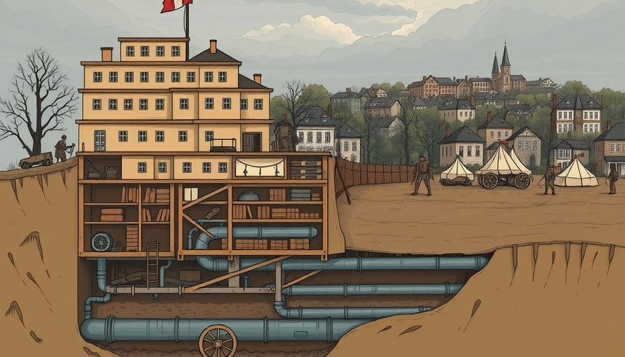
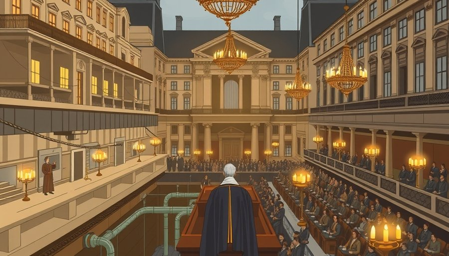
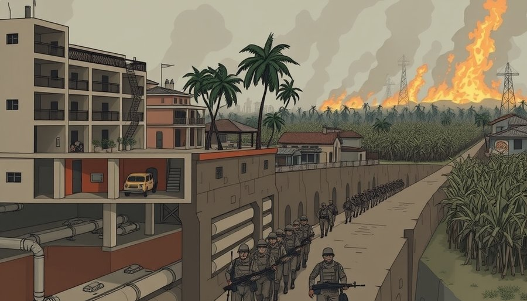
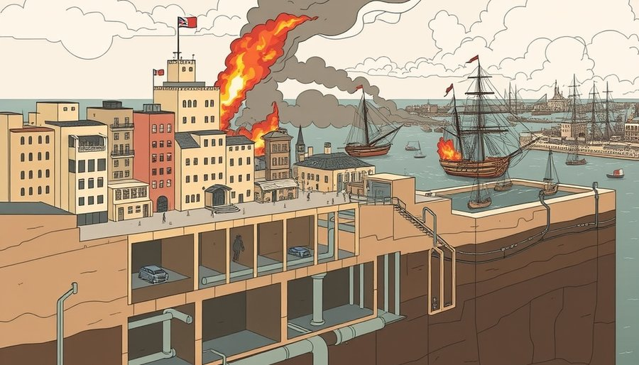

1779年，23岁的诺阿耶子爵登上一艘开往美洲的船。他是法国最古老贵族之一的继承人，本可以在凡尔赛宫享受荣华。但他选择了战争。他的妹夫拉法耶特侯爵已经在美洲大陆为华盛顿效力，诺阿耶决定追随。他成为拉法耶特的副官，带着法国国王的资助和一支军队，投身美国独立战争。
1781年10月，诺阿耶站在约克镇的战壕里。法美联军包围了康沃利斯将军的英军。他负责协调法军的炮兵，昼夜轰击英军阵地。10月19日，英军投降。诺阿耶作为法军代表之一，接受了英军的佩剑。那一年，他25岁。华盛顿亲自向他致谢，称他为“我们共同事业的忠诚朋友”。
战后，诺阿耶成为辛辛那提协会的创始成员。这个协会由独立战争军官组成，宗旨是维护“自由与共和美德”。诺阿耶把协会的鹰徽勋章别在胸前，带回法国。他相信，自己参与了一场改变世界的革命：人民可以推翻暴君，建立自由的国家。

1789年，法国自己的革命开始了。国王路易十六召开三级会议，诺阿耶作为贵族代表出席。但他很快倒向第三等级，支持平民代表。7月14日，巴士底狱被攻占。农民起义席卷全国，贵族城堡被烧毁。
8月4日晚上，国民议会在凡尔赛宫开会。代表们争论如何平息农村的暴动。诺阿耶走上讲台。他提议：废除所有封建特权。贵族不再享有免税权、狩猎权、领主司法权。农奴制、劳役、什一税，一律无偿废除。
会场先是一片寂静，然后爆发出欢呼。贵族代表们一个接一个上台，宣布放弃自己的特权。那一夜，法国延续千年的封建制度在法律上被终结。诺阿耶是第一个提议的人。历史学家后来称他为“八月四日之夜的第一人”。
但革命没有停步。1792年，君主制被推翻，激进派掌权。诺阿耶作为贵族，尽管曾是改革先锋，也面临逮捕。他逃往英国，随后流亡美国。在费城，他开了一家银行，试图忘记政治。但他胸前仍然别着那枚辛辛那提勋章。

1802年，拿破仑·波拿巴召唤诺阿耶回国。这位第一执政需要经验丰富的军官，去平定加勒比海的一场叛乱。圣多明各，法国的殖民地，黑人奴隶在杜桑·卢维杜尔领导下起义，已经控制了全岛。拿破仑想恢复奴隶制，重新夺回蔗糖利润。
诺阿耶接受了任命。他作为勒克莱尔将军的副手，率领一支舰队前往海地。他带去了那枚辛辛那提勋章，也带去了法国军队的荣誉感。但这一次，他站在了自由的对立面。
法军登陆后，迅速占领港口城市。但起义军退入山区，展开游击战。黄热病在法军中蔓延，成批的士兵死去。勒克莱尔本人也染病身亡。诺阿耶继续指挥，执行拿破仑的命令：不惜一切代价，镇压叛乱。
法军使用了残酷的手段。他们烧毁村庄，屠杀俘虏，甚至用硫磺熏死躲在山洞里的黑人。诺阿耶参与指挥了这些行动。历史记录没有留下他个人的内心冲突，但他的行动表明，他选择了服从。一位曾为美国自由而战的人，现在成了奴隶制的捍卫者。
1803年，局势逆转。起义军在让-雅克·德萨林领导下发动反攻。11月，在韦蒂耶尔战役中，法军惨败。诺阿耶的部队损失殆尽。他带着残兵逃往海岸，登上一艘军舰，驶向古巴。

1804年1月，诺阿耶的船在古巴附近遭遇英国海军。当时英法再次开战。英舰开火，炮弹击中法舰。诺阿耶腹部受伤。他被俘，几天后死在英国人的船上。
他死时48岁。身上还带着那枚辛辛那提勋章。那枚勋章见证了他在约克镇的荣耀，也见证了他在海地的失败。同一个物件，连接了三场革命，却无法调和自由与奴役的矛盾。
诺阿耶死后两个月，海地宣布独立。这是世界上第一个由黑人奴隶起义建立的共和国。而在法国，拿破仑的帝国继续扩张，直到滑铁卢。
诺阿耶的家族也付出了代价。他的弟弟在法国革命中被处决。他的妹夫拉法耶特幸存下来，成为法国自由派的象征。但诺阿耶的名字在历史中变得模糊。他既没有被塑造成英雄，也没有被钉上耻辱柱。他只是一个被时代洪流裹挟的人，在每一次选择中，都试图忠于他的国家、他的阶级和他的荣誉。而这三者，最终走向了不同的方向。
余波
诺阿耶的遗体被埋葬在古巴附近的一个小岛上，墓碑早已湮没。2010年海地大地震后，历史学家重新审视法国殖民史，诺阿耶的名字再次被提及，作为革命理想与现实利益撕裂的案例。
小汪老师的成长观察笔记